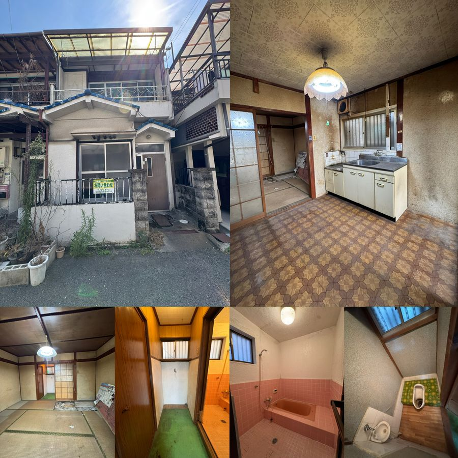
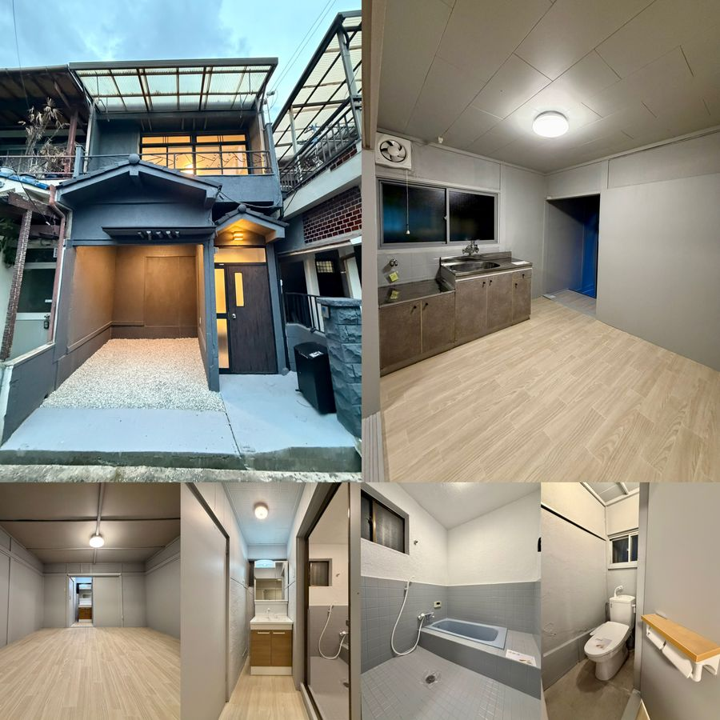
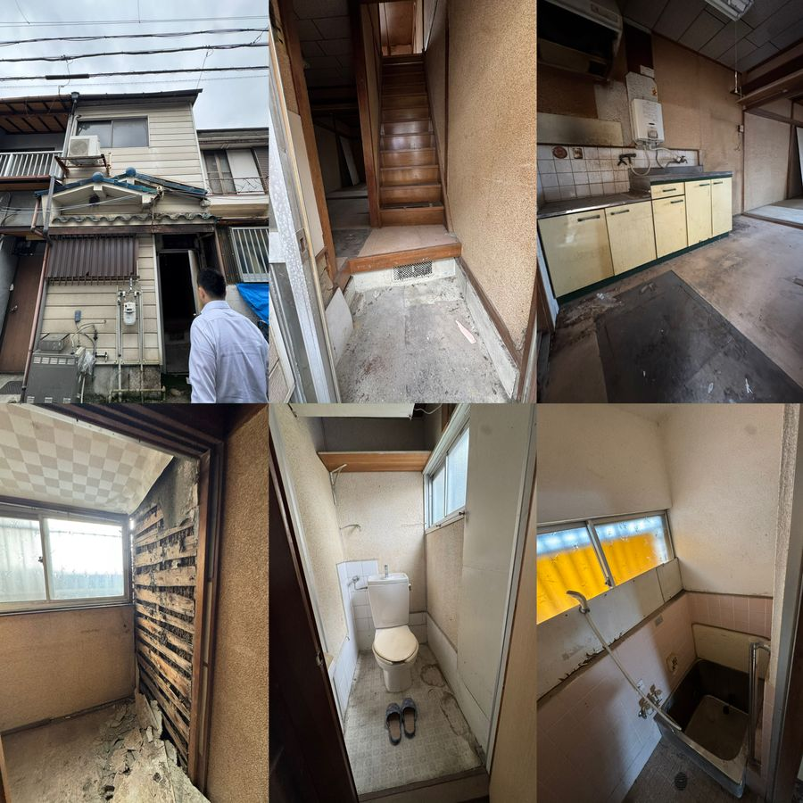
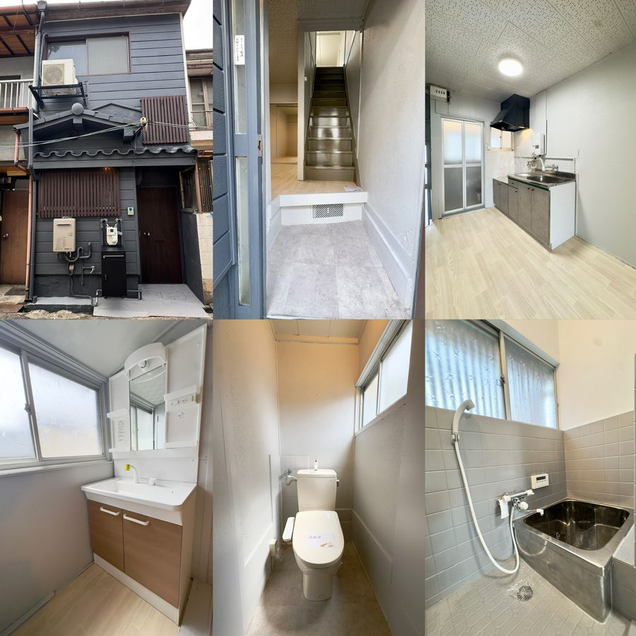
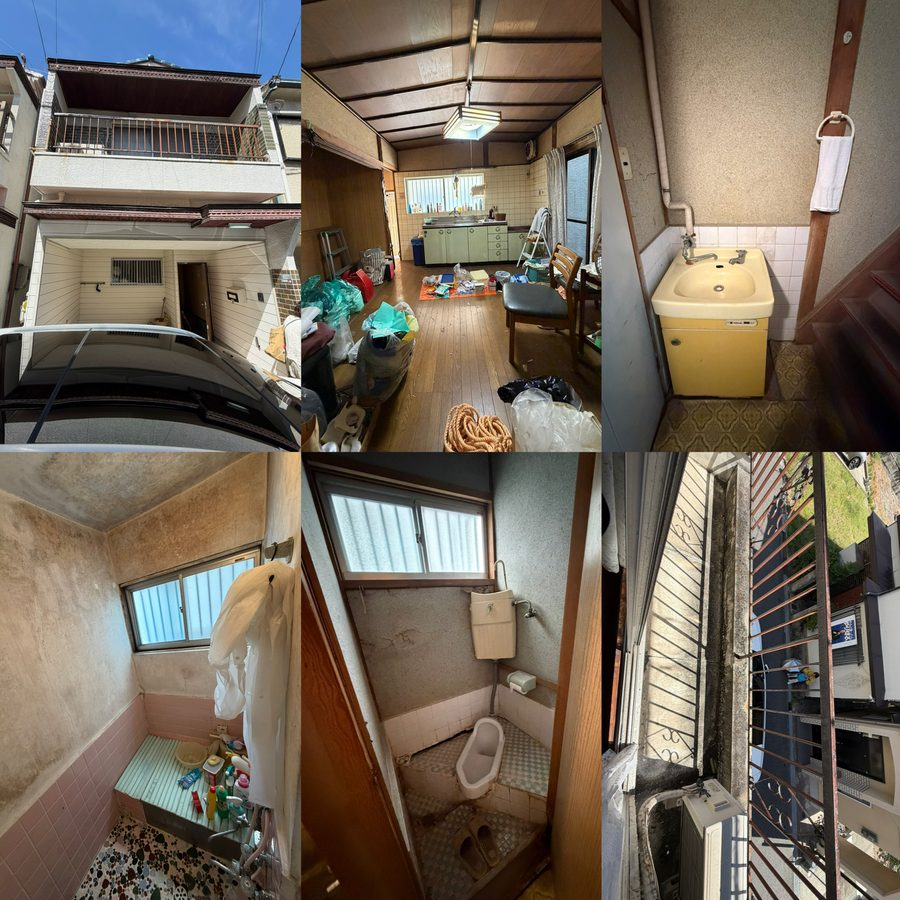
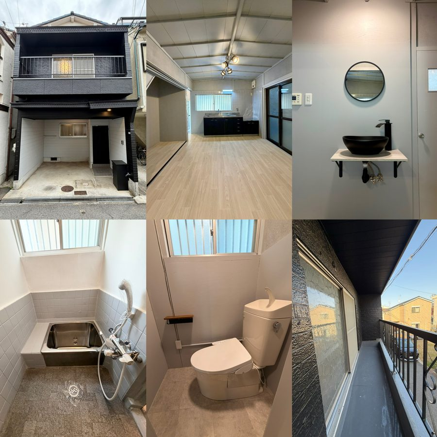

事業内容・実績
空き家や土地など、一つとして同じもののない不動産。それぞれの状況と可能性を見極め、再生・売買・有効活用まで丁寧にサポートします。
各事業の内容と、実際の取引・再生実績をあわせてご紹介します。
01
空き家・古家の再生
使われなくなった戸建て・テラスハウス・アパートなどの可能性を見極め、再生や新たな活用へとつなげます。
空き家再生について
当社では、戸建て・テラスハウス・アパートなど、長期間使用されていない空き家の再生に取り組んでいます。物件の状態や立地、周辺の需要を確認し、再生後の活用方法を見据えて改修内容を検討します。
主な改修内容
和室の洋室化、キッチン・浴室・洗面・トイレなどの水回りのリニューアル、外壁塗装、宅配ボックスの設置など、物件の状態に応じて必要な改修を行います。
再生後の活用
再生後は、賃貸物件としての運用、入居者がいる状態でのオーナーチェンジ売却、実際にお住まいになる方への販売など、物件の特性や市場の状況に合わせて活用方法を検討します。






02
不動産売買・仲介
土地・戸建て・収益物件などの売買を、物件調査や条件調整から契約・引き渡しまで一貫してサポートします。大型の土地取引にも対応しています。
不動産売買・仲介実績

03
不動産活用のご相談
売却・再生・保有など、お客様のご希望や物件の状況に合わせて活用方法を検討します。必要に応じて不動産会社や各分野の専門家と連携し、適切な体制を整えます。
専門家との連携体制
不動産会社や各分野の専門家とのネットワークを活かし、物件ごとに必要な体制を整えます。
物件のご相談、資産活用に関するご質問など、まずはお気軽にご連絡ください。
お問い合わせはこちら →